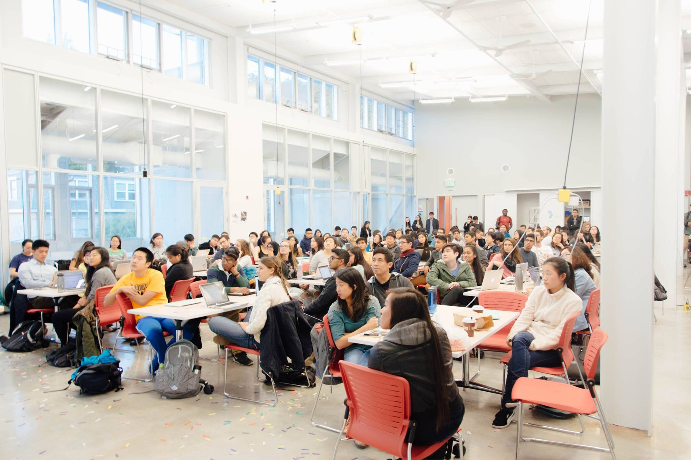

Education
Web Design Decal
HTML, CSS, Javascript, JQuery, Web Design
TIMEFRAME
January 2016 - December 2016
ROLES
Teaching Assistant, Lecturer
The Web Design Decal (WDD) is a 2-unit student-led class at UC Berkeley. The purpose of the class is to teach students how to code in HTML, CSS, Javascript, and JQuery.
Every semester, we get about 500-600 applicants, of which we take a little over 100 total. Throughout the semester, we have regular 2-hour lectures, where we teach fundamentals in design and web programming, sprinkled with a few hands-on activities to help cement ideas and concepts. Students are also expected to complete weekly homework assignments and two projects (a group project focused on website redesign and an individual project of their choice) by the end of the course.
Front-end tools and design principles are skills that are both incredibly useful and surprisingly enjoyable. Until recent years, UC Berkeley did not have many dedicated undergraduate courses that touched these topics.
My Experience
I took WDD (CS 98/198) in the fall of 2015 — after years of taking many Computer Science courses that were more devoted to back-end — and fell in love with front-end programming. I applied to be a TA the semester after. Since then, I have prepared and taught lessons, and helped facilitate the course for two semesters.

First class as a TA!
As an instructor of the decal, I was able to design hands-on curriculum to synthesize and establish concepts in the class for students, and provide 1-1 feedback on student projects and assignments.
One of the concepts students often struggle with is basic CSS positioning. As a result, I created an in-class hands-on activity to aid students in understanding how to distinguish between the different positions. The resulting hands-on is a game of setting the table to match the image below.
Teaching and facilitating WDD has allowed me to grow as a designer and developer, as well as an educator, in effectively communicating both aesthetic and technical concepts to students of all types of backgrounds. From leading a hands-on in a big classroom setting, to sitting down with one or two students during office hours, I have learned to adapt how I teach concepts to different situations and different people, through a variety of different mediums. It has been an incredibly rewarding experience watching students grow in their abilities, while also learning from their individual strengths and creativity.